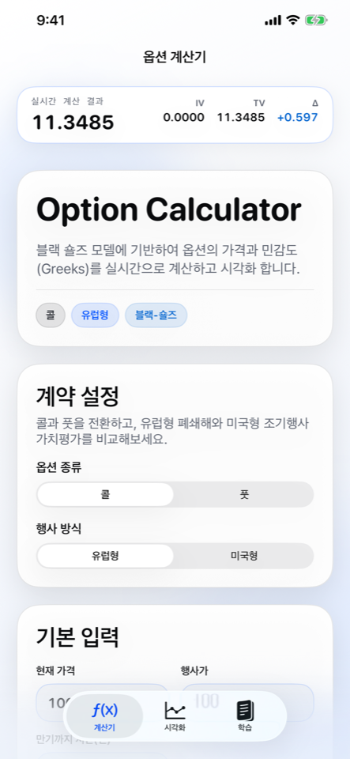
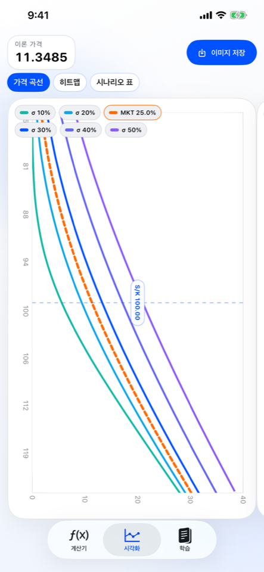
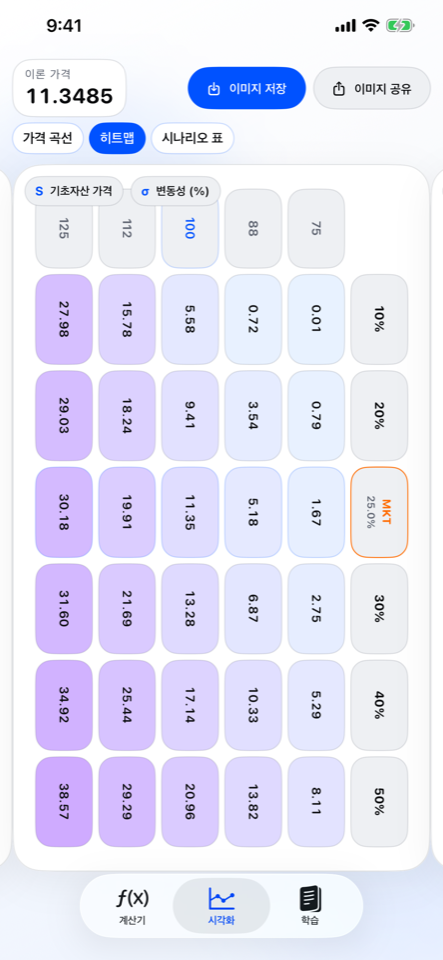
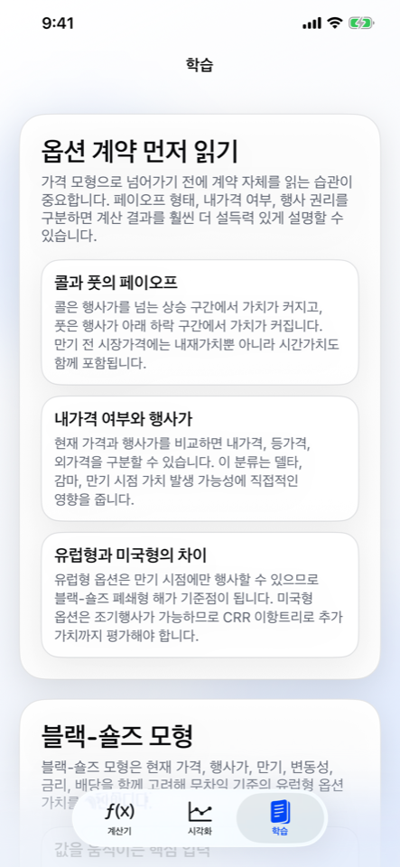

실시간 옵션 가격 계산
현재 가격, 행사가, 만기, 변동성, 무위험이자율을 입력하면 이론 가격과 핵심 지표가 즉시 갱신됩니다.
Option pricing for focused learners
Option Calculator는 MBA 및 경제학 학습자를 위해 설계된 iPhone 앱입니다. Black-Scholes 기반 이론 가격 계산, 유럽형·미국형 옵션 비교, Greeks 해석, 가격 곡선·히트맵·시나리오 표 시각화를 하나의 흐름으로 묶었습니다.

Built for structured explanation
단순 계산기에서 끝나지 않습니다. 입력값을 바꾸는 순간 결과가 즉시 갱신되고, 그 결과를 차트와 히트맵, 표로 이어서 설명할 수 있게 설계했습니다.
현재 가격, 행사가, 만기, 변동성, 무위험이자율을 입력하면 이론 가격과 핵심 지표가 즉시 갱신됩니다.
Greek 문자를 실제 기호로 보여주고, 각 민감도가 무엇을 의미하는지 앱 안에서 바로 읽을 수 있습니다.
가격 곡선, 히트맵, 시나리오 표를 스와이프 기반으로 전환하며 같은 가정을 서로 다른 시각으로 비교할 수 있습니다.
Product walkthrough
계산, 시각화, 학습 탭이 어떻게 연결되는지 한눈에 볼 수 있도록 실제 iPhone 스크린샷을 그대로 담았습니다.



For classes, self-study, and sharper conversations
빠르게 값을 확인할 때도, 왜 그런 값이 나오는지 설명해야 할 때도 같은 앱 안에서 끝낼 수 있도록 구성했습니다.